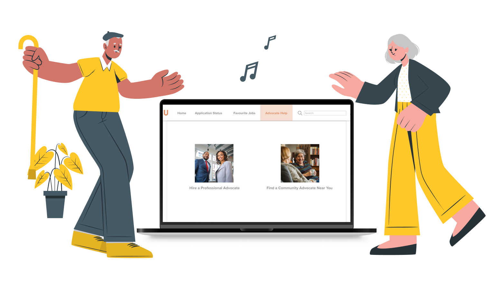

Business+Tech Innovation Project
Our Goal
ConnectU is a job-searching platform for older people. We want to build a path for older adults to contribute their talents in the local community, continue building meaningful lives after retirement.
Business Problem and opportunity
Based on our research, we find that retirement is a source of financial stress and social isolation which cause worsening health problems for older adults. As a result, we believe that creating a path for older adults to contribute their talents in the local community, and continue building meaningful lives after retirement is a promising opportunity.
Takeaways
I worked closely with business students. When working with people from different professional backgrounds, talking with them in their language is vital for keeping everyone on the same page. At the same time, Finding the critical point with limited time to move forward with the flaws is another skill I gained.
